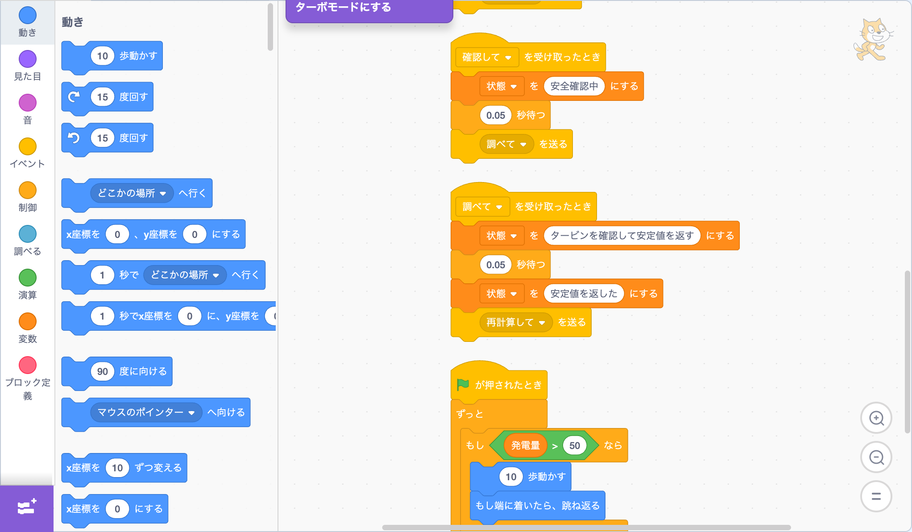
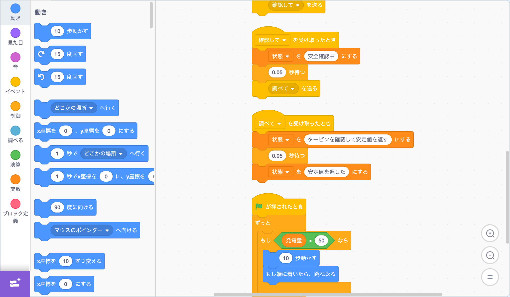

In a town near the sea, there lived a young man named Sota.
As a child, Sota had loved programming. His favorite was a piece of software called Scratch. He could spend hours making the cat on screen run, jump, or collect stars in a game he built himself.
The yellow "when flag clicked" block.
The orange "forever" block.
The blue "move 10 steps" block.
And the "broadcast message" block, which sent a signal whenever something happened.
Sota would connect them, connect them, connect them,
and make the cat on screen come alive.
For example, like this:
And the cat would run happily across the screen, right and left.
But sometimes, things didn't work out.
If he built it like this, no matter how many times he clicked the flag, the cat wouldn't move. Because the "Start" signal had never been sent.
And sometimes, this happened too:
Cat 1:
Cat 2:
Cat 1:
When this happened, the cats would keep sending signals back and forth forever, and though the conversation continued, nothing ever moved forward.
At times like those, Sota would stare quietly at the blocks.
Which block was the beginning?
Where was each one sending its signal, and to whom?
Where was something waiting, and where was something repeating?
Sota loved thinking about these things.
As an adult, Sota worked fixing all sorts of machines and computers around town. Even complicated machines sometimes looked to him like the Scratch blocks from his childhood.
One summer morning, Sota received an urgent call.
"It's an emergency! The power plant by the sea isn't working properly!"
The plant was a large, impressive facility that generated electricity using the power of the ocean's tides. The town's streetlights, the school's air conditioners, the traffic signals at night—all of them depended on electricity from that plant.
Sota headed straight there.
Inside the plant, everyone wore worried faces. Red messages glowed across a large monitor.
Output declining
Adjusting
Awaiting confirmation
The plant director said:
"The machines aren't broken. But for some reason, nothing is running smoothly. It's as if they're all stuck thinking…"
Sota stared at the monitor. Indeed, nothing had stopped. But the machines would move a little, then pause, move a little, then hesitate—as if they were lost.
It was as if everyone was saying,
"After you, please,"
"No, no, after you,"
and nobody could go first.
Sota nodded quietly.
"I think I might understand."
"Really?!" said the director.
But Sota didn't spread out a sheet of paper. Instead, he borrowed a support terminal next to the control desk and opened Scratch on it.
A young engineer's eyes went wide.
"Wait… Scratch?"
"Yes. Before touching the real controls, I want to extract just the flow and run it on a small scale."
"But this is a power plant!"
"Exactly. When something is too complex, trying to look at it directly only makes it harder to understand. Let's use Scratch to keep just the sequence and the signals."
Sota opened a new project. On the white stage, a single Scratch cat appeared.
First, Sota created several variables:
Then, he began placing blocks one by one.
The first column represented the changing sea.
"This represents how the sea gradually changes," Sota explained. "The real thing is much more complex, but the basic framework of 'when something changes, something happens' is enough to start."
Next, he built the second column: the role that receives a signal and calculates the town's electricity demand.
"This 'wait 0.5 seconds' matters too," Sota said. "In Scratch, adding a wait block changes how the flow behaves. At the power plant, the waiting time for checks can make things complicated."
Then the third column: the safety monitor.
And the fourth column: the turbine inspector.
The young engineer stared at the blocks on screen and said:
"The power plant's entire job is right there in Scratch…"
"Yes. Even when you're dealing with enormous machines, if you break the work into small pieces, it often looks just like this."
Sota clicked the green flag.
The cat moved gently on the left side of the stage while the variables changed on screen.
The tide level changed.
The change amount grew.
It exceeded the threshold.
Then "recalculate" was broadcast.
The status changed to "recalculating demand."
After a short wait, "verify" was broadcast.
After another wait, "inspect" was broadcast.
So far, so good.
But after running it a few times, Sota added a few more blocks to make it closer to the real power plant.
The engineer said:
"That sends it right back to the beginning, doesn't it?"
"Yes. When we make it closer to the actual control system, that's exactly what happens."

Sota clicked the flag again.
This time:
"recalculate"
"verify"
"inspect"
"recalculate"
"verify"
"inspect"
The status began flickering restlessly.
The cat hadn't stopped.
The numbers were still changing.
But it was clear that something was going around and around in the same circle.
The young engineer couldn't help but cry out.
"That's it!"
"You see it?"
"Yes… Nothing's broken. They're all so diligent about checking that they keep repeating the same conversation over and over."
"Exactly," said Sota. "It's the same as in Scratch, when characters keep sending 'Start!' 'Got it!' 'Start!' back and forth."
The director peered at the screen.
"This little program shows how the power plant gets stuck?"
"Yes. And we can also try out where to make changes."
Sota swapped out one condition block.
The old block had been:
Sota removed it and replaced it with:
"We stop calling a meeting for every tiny ripple," Sota said. "We only bring everyone together when there's a truly big change."

He clicked the flag once more.
The tide level changed.
The change amount shifted.
For small changes, it simply moved on.
Only for big changes did "recalculate" get broadcast.
Demand was recalculated.
Safety was verified.
The turbine was inspected.
The status settled down.
The spinning loop fell quiet.
The young engineer watched the screen as if he'd forgotten to breathe.
"The same blocks, but changing just one condition made such a difference…"
"That's how Scratch works," said Sota. "Where you place a single block can change how the whole world behaves."
The young engineer's eyes lit up.
"Could I… see this later?"
"Of course."
"Honestly, at first I thought it was just for kids. But it's so clear, and you can test things right on the spot…"
Sota nodded.
"The more important a system is, the more you should resist trying to see it all at once. Start small. Scratch is perfect for that."
The director spoke quietly.
"Do you think this approach can be applied to the real controls?"
"Yes. Not all at once—start with a small subsystem first. In Scratch, you wouldn't change every sprite at once, would you?"
And so the engineers, guided by the ideas they had tested in the simulation, fixed just one small turbine's control first.
Everyone held their breath.
One red message disappeared.
Next, they tried the same approach on a slightly larger system.
Another red message disappeared.
Before long, the faltering power plant slowly, but surely, began to recover.
VRRRMMM…
A powerful sound rumbled from below. The ocean's force was once again being cleanly transformed into electricity.
"It's working…!"
"It's back!"
"The town's power is stable!"
Bright voices filled the power plant.
The director, looking relieved, said to Sota:
"You saved us. Thank you so much."
But Sota didn't nod right away.
"I'm glad we could fix it today. But what matters more is what comes next."
"What comes next?"
"No matter how impressive a machine is, if it isn't built clearly, the same thing will happen again. Who sends what signal, to whom, and when—it should be clear enough that even a child could follow it."
The director thought for a moment, then smiled gently.
"Even a child?"
"Yes. Because I learned it as a child myself."
When the work was done and Sota stepped outside, the sea sparkled in the morning light. The waves came and went quietly, as if nothing had happened.
The young engineer followed after him.
"Um, could you send me that Scratch project?"
"Of course."
"Honestly, at first I thought it was childish. But it was really easy to understand."
"I'm glad."
"I used to play with Scratch as a kid, too. I could only make the cat run, though."
Sota stopped walking and smiled.
"That's more than enough."
"Enough?"
"Yes. For example, you made the cat run when the flag was clicked, right?
You put 'when flag clicked' on top,
then added 'forever' beneath it,
snapped in 'move 10 steps,'
and connected 'if on edge, bounce.'
You were thinking about which signal starts things, how to move, and where to turn around."
The young engineer's eyes went wide.
Sota continued:
"You weren't just making a cat run.
You were breaking things down into small steps.
Deciding signals, deciding loops, deciding conditions, and going back to check the blocks when things didn't work.
Power plants, traffic lights, robots—they all work the same way, really."
The young engineer was quiet for a while, but then he smiled, looking happy.
"So I was practicing something useful all along."
"Yes," said Sota. "You were practicing how to move the world."
Sota looked up at the sky. In the distance, an inspection drone glided smoothly across the blue.
As a child, connecting colorful blocks,
making the cat take one step,
making it jump,
fixing it again and again when it didn't work.
Those small experiences
can grow up with you
and one day become the power to protect the lights of a town.
And so Sota thought:
The things you were passionate about as a child
don't disappear.
They grow quietly inside you,
and one day become the strength to help someone.